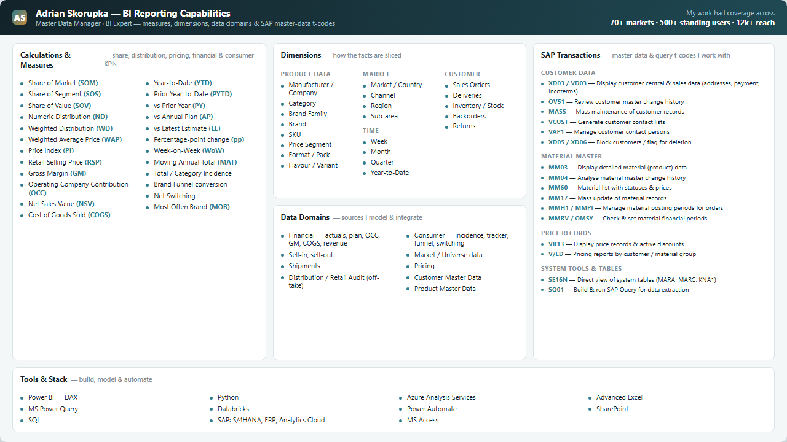
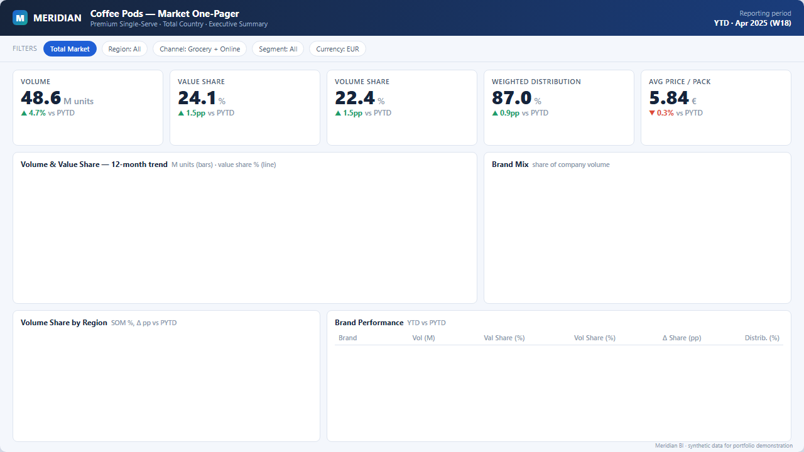
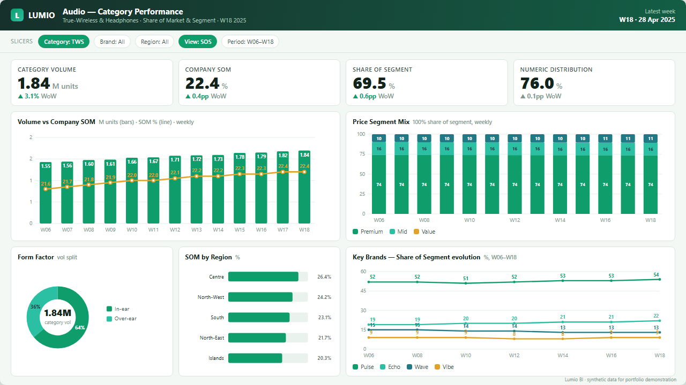
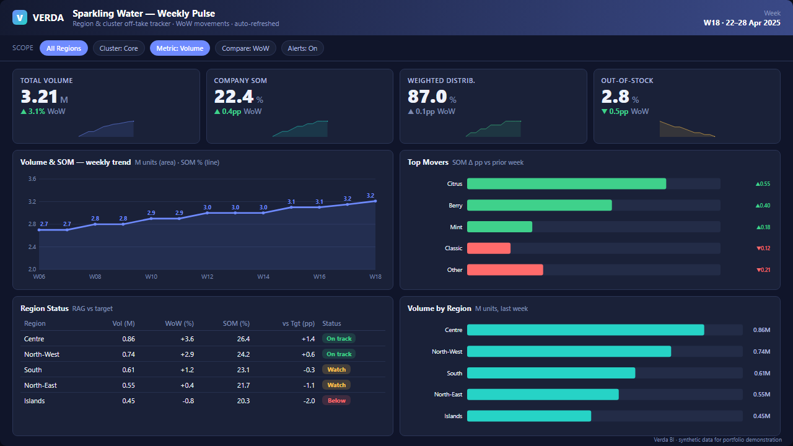
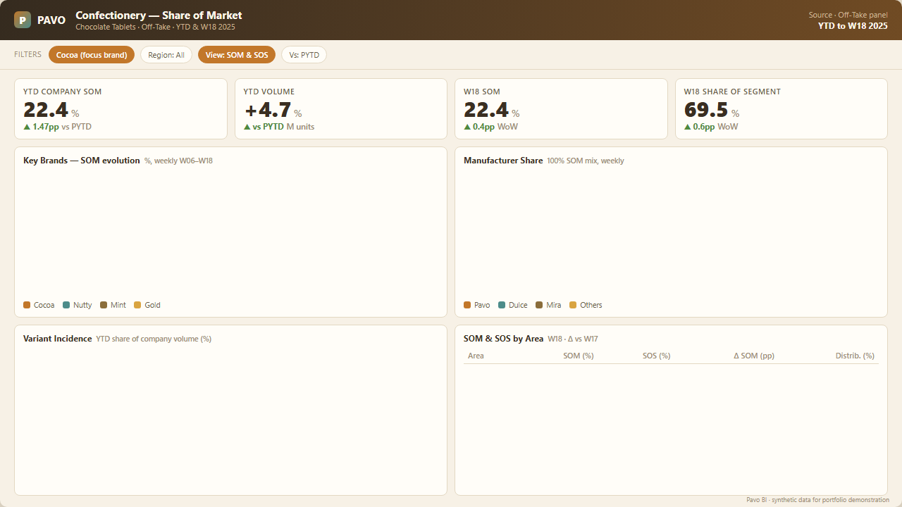
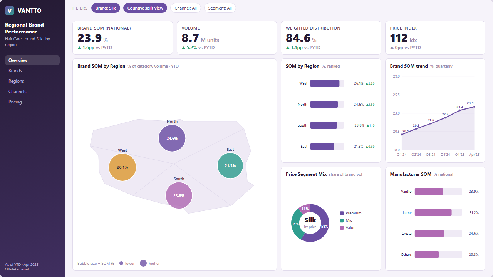
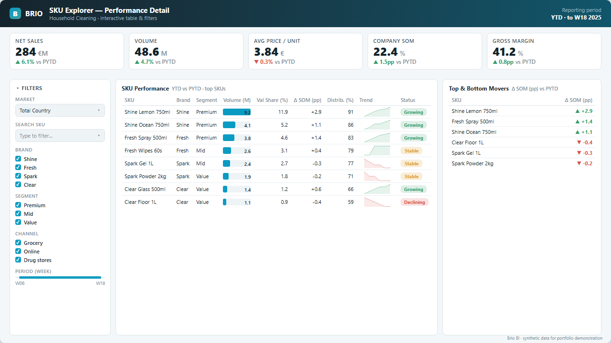
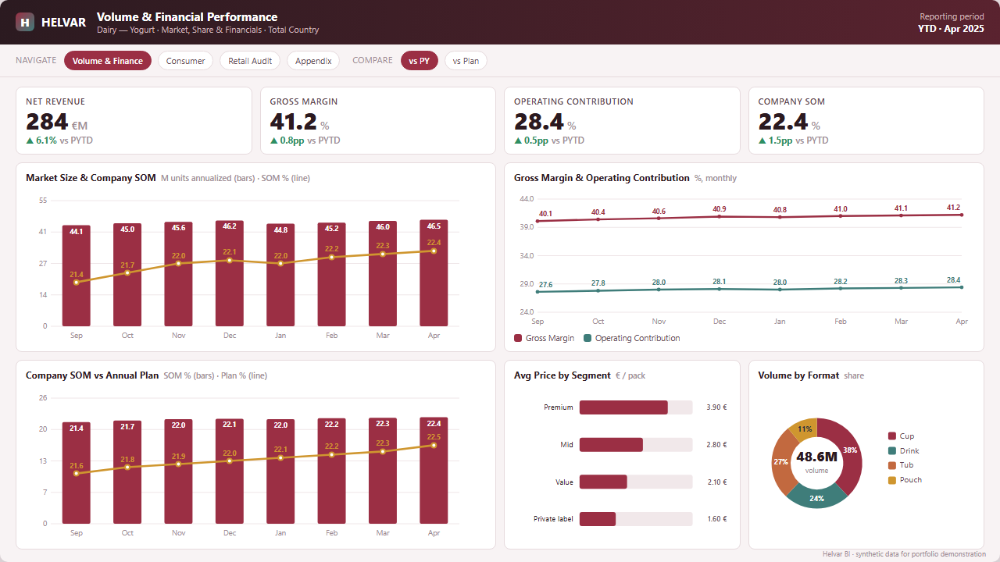
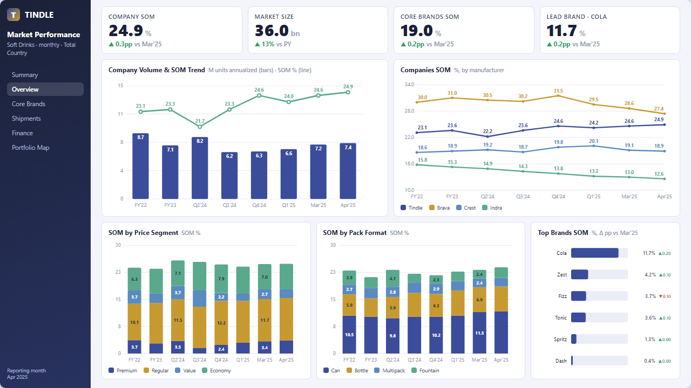
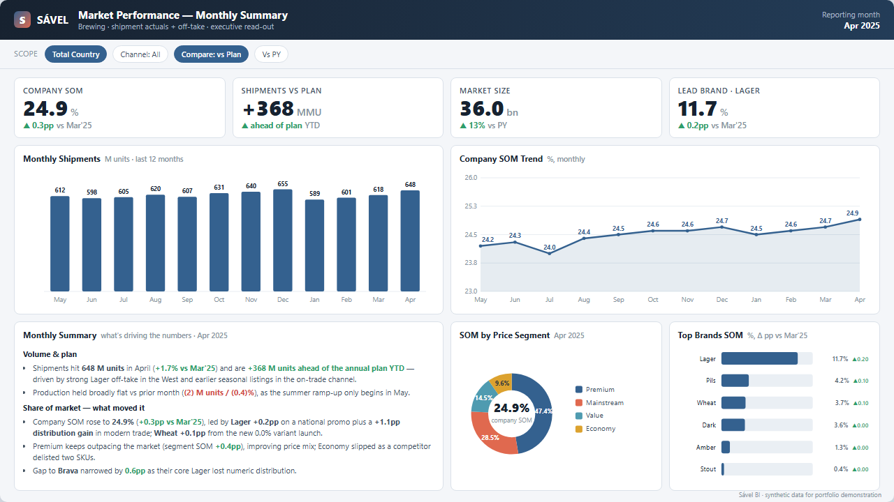

A selection of Power BI report designs built for FMCG market analytics — executive one-pagers, performance dashboards, weekly trackers, share-of-market reports, and a full reference of the data model and capabilities behind them.

One-page reference of the measures (SOM, SOS, SOV, WAP, MAT…), slicer types and data sources I build with across FMCG markets — the vocabulary and toolkit behind every dashboard below. SAP master-data & query t-codes I work with, and the data domains (financial, shipments, distribution, consumer, pricing) each report draws on.









Note: all figures are synthetic and every company, brand and market name is fictional — each dashboard uses a different fictional company and product category. These mockups recreate report layouts I authored, with confidential data and identifiers removed. Built with hand-coded HTML + SVG (no external charting libraries) so every chart renders instantly, with no dependencies.